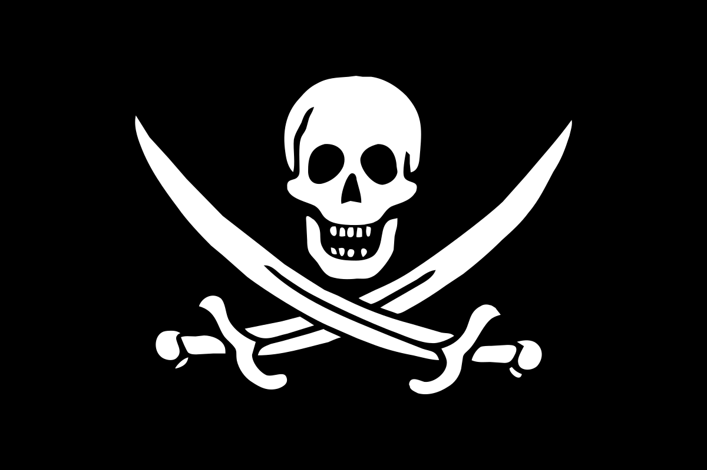
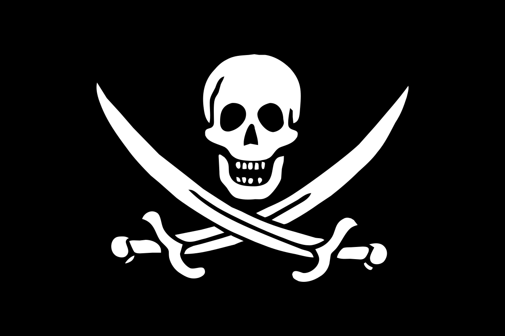

Piraterie 🏴☠️
La piraterie désigne une forme de banditisme pratiquée sur mer par des marins appelés pirates. Cependant, les pirates ne se limitent pas seulement aux pillages de navire, et attaquent parfois de petites villes côtières.
Étymologie et définition
Le mot « pirate » vient du latin pirata (« celui qui tente la fortune, qui est entreprenant ») − attesté depuis Cicéron −, qui s'est imposé devant le terme praedo maritimus. Pirata est un emprunt au grec πειρατής (peiratês), c'est-à-dire « brigand, bandit qui court les mers pour attaquer les navires », mot avec spécialisation de sens dérivé du verbe πειράω (peiraô) signifiant « s'efforcer de », « essayer de », « tenter sa chance à l'aventure ». Cicéron déclare les pirates de l'Antiquité « ennemis communs à tous » (communis hostis omnium) car ils échappent aux catégories habituelles du droit. Au Moyen Âge, la signification du terme « pirate » se restreint pour désigner plus spécifiquement des bandits qui parcourent les mers pour piller des navires marchands.
La piraterie a connu plusieurs périodes fastes, à la fin du Ier siècle av. J.-C. en Méditerranée, et au XVIIIe siècle dans les Antilles et l’Océan Indien puis peu à peu disparu de ces régions, du fait du quadrillage des marines d'État. Le mot pirate est utilisé aussi dans différents contextes autres que maritime : le « pirate de la route », que l'on appelait autrefois « voleur de grand chemin », le « pirate informatique », qui désigne un individu s'introduisant illégalement dans un système informatique.
Histoire
La piraterie existait déjà dans l'Antiquité. Toutes les civilisations anciennes ayant possédé une marine l'ont connue, les Phéniciens comme les Mycéniens, la mer étant considérée comme un espace libre où règne la « loi du plus fort ». Lorsque les États deviennent plus puissants, à la piraterie s'ajoute la guerre de course.
Jules César dut lui-même affronter la piraterie. Lors d'un voyage vers l'Orient entre les années 75 av. J.-C. et 74 av. J.-C., il fut capturé par ceux-ci, à hauteur de l'île de Pharmacuse, à proximité de la ville de Milet en Asie Mineure. Dès sa libération contre rançon, il entreprit de se venger. Après avoir réuni en toute hâte une flottille, il surprit et captura les pirates qu'il fit exécuter et, en partie, crucifier. Pompée se rendit célèbre en nettoyant la Méditerranée des pirates ciliciens.
Galerie d'images
 
